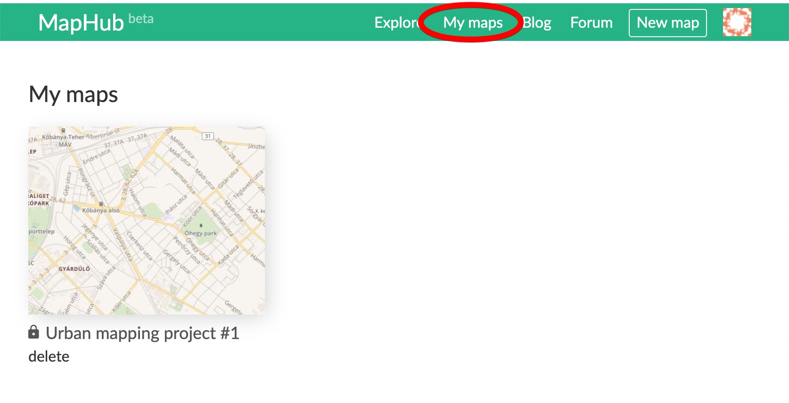
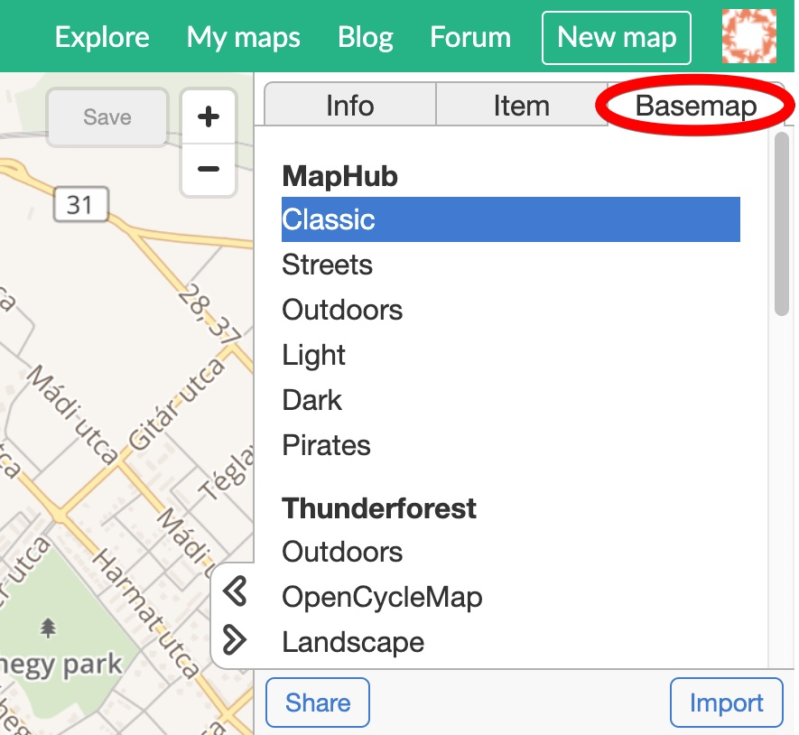

Drawing building outlines using satellite imagery and the drawing tools
This tutorial start where "Creating your first map" finished. If you haven't done it yet, we recommend you to do it first.
Click "My Maps" and load the map you've saved previously, by clicking on it.

Navigate and zoom in to the region of your interest. Now click on the "Basemap" tab.

Here, you can try different basemaps from multiple providers, in dozens of styles. Feel free to play around and see how they change your map style.